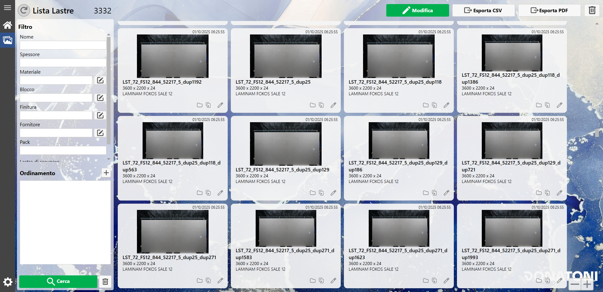
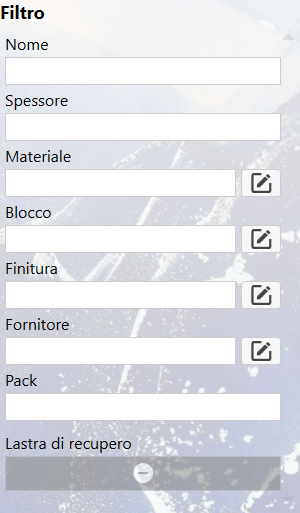
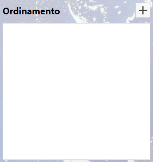
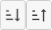
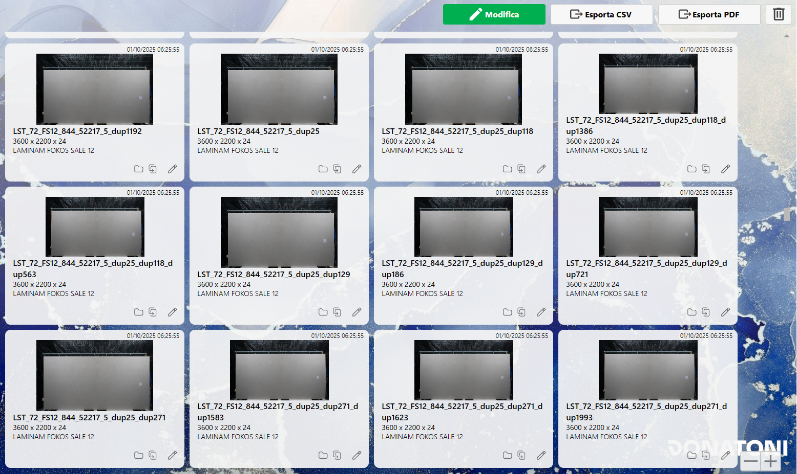
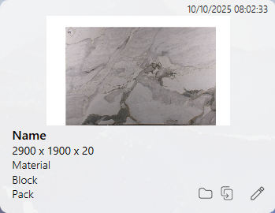
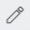

This card allows viewing, searching, modifying, deleting and exporting slabs in the system.

Structure
The card is divided into the following sections:
Filters and sorting
Slabs list
Actions
Filters and sorting
This section allows setting filters and ordering slabs based on their parameters using the 'Search' action.


Filter
Most filters are used as displayed also in the Slab Edit panel.
The only exception to the previously displayed parameters is the Yes/No parameter (e.g., 'scrap slab'), which has three checkable states:
Insensitive | |
Yes | |
No |
Sorting
The advanced sorting system allows, through the 'Add' button at the top right, to select sorting parameters, order, and whether ascending or descending.
Add |
When a parameter is added to the sorting list, it will appear like this
Has three icons indicating actions
Move | |
 | Sorting ascending/descending |
Remove |
Actions
Found | |
Discard filters | |
Reload |
Slabs list
This section displays a preview of the slabs present in the system, with options to filter and sort the viewing.

Card
It is possible to select a single card to modify or delete it.

From the image the following information can be seen:
Creation Date: indicates the date and time when the slab was added to the system (top left).
Slab preview: shows the slab image;
Name: the first text value (in bold) indicates the unique code of the slab
Size: indicates the dimensions of the slab (Width x Height x Thickness)
Material: Material code set on the slab
Block: Indicates the block on the slab
Pack: Indicates the pack set on the slab
There are buttons in addition to the information
Open folder | |
Copy | |
 | Edit |
Disposition size
In the bottom right there are two buttons to zoom in or zoom out the cards, so as to better see the slabs or display more simultaneously.
Zoom in | |
Zoom out |
Actions
Edit | |
Export CSV/PDF | |
Delete |